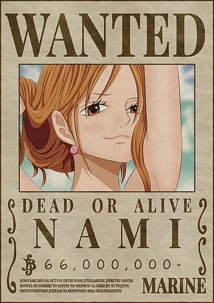
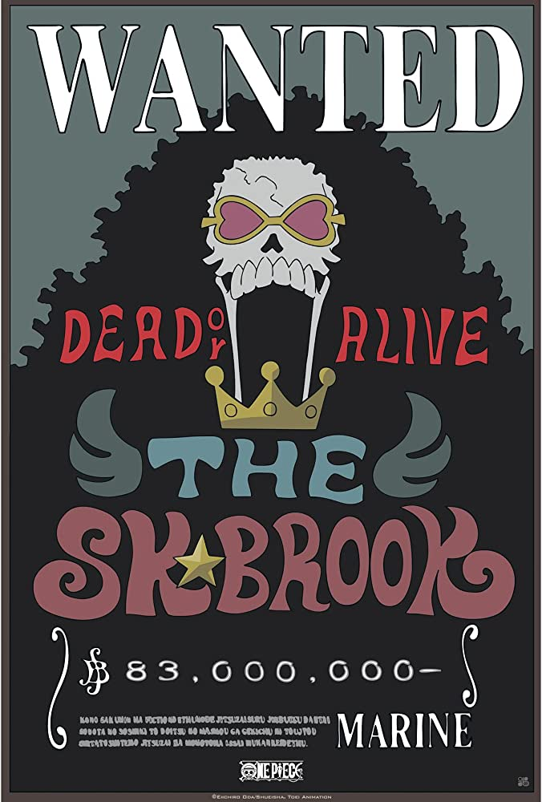

|
|
Monkey D. Luffy |
Ele é o fundador e o capitão do cada vez mais infame e poderoso Piratas do Chapéu de Palha, bem como um de seus principais lutadores. Seu sonho de vida é se tornar o Rei dos Piratas, encontrando o lendário tesouro deixado pelo falecido Rei dos Piratas, Gol D. Roger. Ele acredita que ser o Rei dos Piratas significa ter a maior liberdade do mundo. Nascido na Vila Foosha, Luffy acidentalmente comeu a Gomu Gomu no Mi aos 7 anos de idade, que deu ao seu corpo propriedades de borracha. |
|
|
Roronoa Zoro |
É o combatente dos Piratas do Chapéu de Palha e um ex-caçador de recompensas. Ele foi o primeiro membro a juntar-se à tripulação. Sua fama como mestre espadachim e sua grande força. Ele é um dos quatro melhores lutadores da tripulação, ao lado de Luffy, Sanji e Jinbe, e seu sonho é se tornar o maior espadachim do mundo. |
|

|
Nami |
É a navegadora dos Piratas do Chapéu de Palha. Ela foi o terceiro membro da tripulação. Ela era anteriormente membro dos Piratas do Arlong e juntou-se inicialmente aos Chapéus de Palha com a intenção de roubá-los, mas se tornou de fato um dos Chapéus de Palha depois que eles se rebelaram e derrotaram Arlong. Seu sonho é fazer um mapa do mundo inteiro. |

|
Usopp |
É o Atirador dos Piratas do Chapéu de Palha. Ele é o quarto membro da tripulação. Usopp é o filho de Yasopp e Banchina. Ele nasceu e foi criado na Vila Syrup, e era o "capitão" dos Piratas Usopp e o amigo mais próximo de Kaya. Após colaborar com os Chapéus de Palha para derrotar Kuro e os Piratas do Gato Preto, ele foi convidado a se juntar à tripulação. Apesar de sua covardia normal, Usopp sonha em se tornar um corajoso guerreiro do mar como seu pai, e vive todos os dias em busca de viver à altura deste sonho. |
|
|
Vinsmoke Sanji |
É o cozinheiro dos Piratas do Chapéu de Palha, assim como um antigo chefe de cozinha do Baratie. Ele é oficialmente o quinto membro da tripulação e o quarto a se juntar, fazendo isso no final do Arco Baratie. Seu sonho é encontrar o paraíso dos chefes, All Blue, sendo esse o lugar onde o East Blue, o West Blue, o North Blue e o South Blue se encontram, juntamente com sua vida selvagem. |

|
Tony Tony Chopper |
É uma rena. Ele é o médico da tripulação dos Piratas do Chapéu de Palha. Chopper é uma rena que, após comer a Hito Hito no Mi, adquiriu a habilidade de se transformar e raciocinar como os humanos.Ele é o sexto membro e um dos poucos membros da tripulação que nasceu na Grand Line, numa ilha chamada Drum. |
|
|
Nico Robin |
É a arqueóloga dos Piratas do Chapéu de Palha. Ela é a única sobrevivente da ilha destruída de Ohara, localizada no West Blue. Como resultado, ela é atualmente a única pessoa no mundo com a capacidade de ler e decifrar Poneglyphs, uma habilidade que é considerada proibida e que ameaça o Governo Mundial. Ela é a sétima integrante da tripulação. Robin também é o primeiro membro a ter sido um antagonista. Ela comeu a Hana Hana no Mi. |
|
|
Franky |
É o carpinteiro dos Piratas do Chapéu de Palha. Franky e seus seguidores foram inicialmente introduzidos como antagonistas do Arco Water 7 contra os Chapéus de Palha até as circunstâncias forçá-los a se tornarem aliados. A pedido da Família Franky, Franky foi permitido se juntar aos Chapéu de Palha para realizar seu sonho de criar e dirigir um navio capaz de dar a volta ao mundo, o Thousand Sunny. Ele é o oitavo membro da tripulação dos Chapéus de Palha e o sétimo a se juntar ao bando de Luffy. |
|

|
Brook |
É o Músico dos Piratas do Chapéu de Palha. Ele é um esqueleto que os Chapéus de Palha encontraram a bordo de um navio fantasma depois de entrarem no Triângulo Florian. Ele é um usuário de Akuma no Mi que comeu a Yomi Yomi no Mi, o que o torna um pseudo-imortal por causa de seus poderes. Ele é o nono membro do Bando do Chapéu de Palha, |

|
Jinbei |
é o timoneiro dos Piratas do Chapéu de Palha. Ele é o décimo membro da tripulação. Jinbe é um homem-peixe sendo um tubarão-baleia e um poderoso mestre do karatê Homem-Peixe. Seu sonho é realizar o desejo moribundo de seu ex-capitão Fisher Tiger de coexistência e igualdade entre humanos e homens-peixe. Ele era um membro dos Piratas do Sol, eventualmente se tornando seu segundo capitão após a morte de seu capitão original, Tiger. Ele eventualmente se tornou um dos Shichibukai, embora tenha renunciado durante a Batalha de Marineford. |